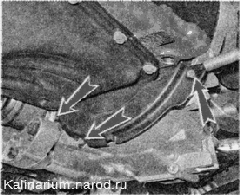
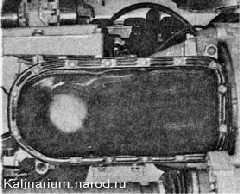
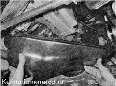

Поддон картера двигателя - снятие, замена прокладки и установкаСнятие 1. Снимаем брызговик двигателя или защиту картера (если установлено). 2. Сливаем масло из двигателя. 3. Торцовым ключом на 10 мм отворачиваем три болта и снимаем нижнюю крышку картера сцепления. 4. Ключом на 10 мм отворачиваем 16 болтов крепления поддона картера двигателя.  Под головками болтов поддона установлены фигурные шайбы - не потеряйте их. 5. Снимаем поддон и прокладку поддона.
Установка Устанавливаем поддон в обратной последовательности, заменив поврежденную или потерявшую эластичность прокладку. Для равномерного распределения прокладки болты крепления поддона картера заворачиваем в направлении от середины к краям. |